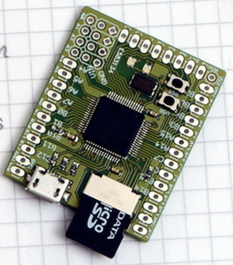
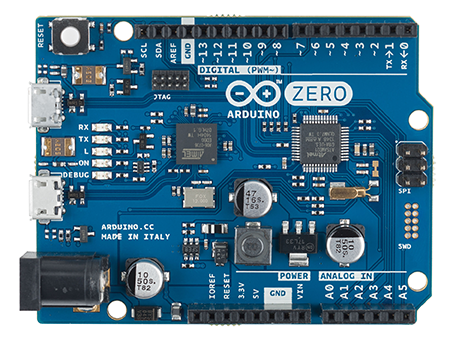
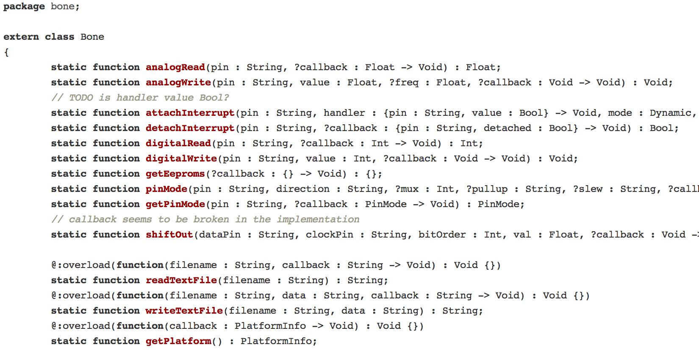

Haxe for Makers
by Franco Ponticelli
@fponticelli
Haxer
A person who uses clever ha(cks|xe) to get the s#!t done.
Maker
A person who loves to create things often with their own hands, often electronics.
Maker Culture
The maker culture is a contemporary culture representing a technology-based extension of DIY culture.Wikipedia
'Maker culture' emphasizes learning-through-doing (constructivism) in a social environment. Maker culture emphasizes informal, networked, peer-led, and shared learning motivated by fun and self-fulfillment.Wikipedia
Open Source
software
hardware
RepRap
RepRap is humanity's first general-purpose self-replicating manufacturing machine.
RepRap
gcode
M109 T0 S190.000000 T0 ;Basic settings: Layer height: 0.25 Walls: 1 Fill: 20 ;M190 S70 ;Uncomment to add your own bed temperature line G21 ;metric values G90 ;absolute positioning M107 ;start with the fan off G28 X0 Y0 ;move X/Y to min endstops G28 Z0 ;move Z to min endstops G1 Z15.0 F3000 ;move the platform down 15mm G92 E0 ;zero the extruded length G1 F200 E3 ;extrude 3mm of feed stock G92 E0 ;zero the extruded length again G1 F3000 ;Put printing message on LCD screen M117 Printing... ;Layer count: 52 ;LAYER:0 M107 G0 F3000 X71.50 Y45.00 Z0.30 G0 X71.50 Y45.00 ;TYPE:SKIRT G1 F2400 E0.00000 G1 F1200 X101.50 Y45.00 E0.63662 G1 X101.50 Y55.00 E0.84883 G1 X81.50 Y55.00 E1.27324 G1 X81.50 Y75.00 E1.69765 G1 X58.50 Y75.00 E2.18573 G1 X58.50 Y65.00 E2.39793 G1 X71.50 Y65.00 E2.67380 G1 X71.50 Y45.00 E3.09822 ; ...
Cura
Open Source Ecology
Open Source Ecology
We’re developing open source industrial machines that can be made for a fraction of commercial costs, and sharing our designs online for free. The goal of Open Source Ecology is to create an open source economy – an efficient economy which increases innovation by open collaboration.
Craftsman
the tools of the trade in the 21st century
Hardware
- machines
- electronics
Software
- libraries
- editors
Craftsman - Machines
3D Printers
Additive Manufacturing
- filament extrusion
- resin curing
- powder deposition
- direct metal laser sintering
- concrete
- bio-material
Craftsman - Machines - 3D Printers
FFE - Fused Filament Extrusion or FDM - Fused Deposition Modelling
Craftsman - Machines - 3D Printers
Filament
Craftsman - Machines - 3D Printers
SLA - Stereolithography & DLP
Craftsman - Machines - 3D Printers
Resin Details
Craftsman - Machines - 3D Printers
Powder Deposition
Craftsman - Machines - 3D Printers
DMLS - Direct Metal Laser Sintering
Craftsman - Machines - 3D Printers
Concrete - Buildings
Craftsman - Machines - 3D Printers
Bio Material AKA Organs, Blood Vessels ...
Craftsman - Machines
Machining
Subractive Manufacturing
- CNC routers
- Laser Cutters
- Water Jet Cutters
- Plasma Cutters
Craftsman - Machines - Machining
CNC Router - Computer Numeric Control Router
Craftsman - Machines - Machining
Laser Cutter
Craftsman - Machines - Machining
Water Jet Cutter
Plasma Cutter
Motion Systems - Cartesian

Motion Systems
4 axis
Motion Systems
Delta
Motion Systems
H-Bot
Motion Systems
SCARA ARM
Motion Systems
7 Axis Arm
Maker Tools
- use a service
- ask a friend
- get accesss to a hackerspace
- build your own
Craftsman
Electronics
using electronic components is more and more like using software librariesmyself
Craftsman - Electronics
Breakout Boards
- I2C
- SPI
- 1 wire
- serial communication (COM / USB / Radio / Bluetooth)
- analog / digital
Craftsman - Electronics
Components

- analog
- digital
Craftsman - Electronics
Sensors
- environmental
- sound
- touch / flex / force
- light / color
- position / orientation
- radiation
- proximity
- ID
- biometric
- current
- switches / buttons
Craftsman - Electronics
Actuators
- sound
- vibration
- heat
- image
- magnetic (solenoid)
- stepper motors
- servo motors
- dc motors
Craftsman
"Physical Libraries"
Open Builds Part Store #1
Open Builds Part Store #2
Open Builds
adafruit #1

adafruit #2
sparkfun
seeed
Craftsman
"Virtual Libraries"
MakerBot Thingiverse
Bld3r
Ponoko
3D Hacker!
Github
Github #2
Editors
Cutters and CNC Routers
- 2D
- 2.5D
- 3D
3D Printers and some CNC
- 3D
Inkscape
OpenSCAD
OpenSCAD #2
OpenJSCAD
Tinkercad
Editors
Opportunity for Haxe Developers?
return ThreeJS.toModel(
Box.create(-0.5, 1.0)
.union(
Box.create(0.1, 1.0))
.subtract(
Box.create(-1.1, 1.0))
.intersect(
Sphere.create(0.0, 0.7))
.subtract(
Sphere.create(0.5, 0.35))
.subtract(
Cylinder.create([0.0,0.0,-0.95],
[0.0,0.0,0.95], 0.25))
.subtract(
Cylinder.create([0.0,-0.95,0.0],
[0.0,0.95,0.0], 0.35))
.subtract(
Cylinder.create(-0.95,0.0,0.0],
[0.95,0.0,0.0], 0.15))
);Haxe
boards that can run Haxe
Support for Haxe Compiler
Linux - pocket computers
Device that can Run Haxe generated code
JavaScript
Python
- Micro Python

Device that can Run Haxe generated code
.Net
C/C++ ?
- Arduino Zero

device that can communicate with Haxe code
anything that has a serial port, a wifi, a bluetooth module ...
- Arduino Uno and friends

Bonescript
RGB Led
class RGBLed {
var pinR : String; var pinG : String; var pinB : String;
public function new(pinR : String, pinG : String, pinB : String) {
this.pinR = pinR; this.pinG = pinG; this.pinB = pinB;
}
public function setColor(color : Color) {
var rgbx = color.toRGBX();
Bone.analogWrite(pinR, rgbx.redf);
Bone.analogWrite(pinG, rgbx.greenf);
Bone.analogWrite(pinB, rgbx.bluef);
}
}
public static function main() {
var led = new RGBLed("P8_19", "P9_14", "P8_13"),
hsl = new HSL(0, 1, 0.5);
js.Node.setInterval(function() {
led.setColor(hsl);
hsl.hue += 1;
}, 20);
}GPS #1
class GPS {
// ...
public function new(serial : Serial) {
serial.onData((function() {
var buf = '';
return function(e) {
switch(e.data)
{
case "\n":
onInstruction(buf);
buf = "";
case c:
buf += c;
}
};
})());
}
// ...
}GPS #2
function onInstruction(line : String) {
if(line.substr(0, 3) != "$GP")
throw 'Invalid line: $line';
switch(line.substr(3, 3)) {
case "GGA":
var d = line.split(','),
dlat = d[2].indexOf("."),
dlon = d[4].indexOf(".");
time = d[1].substr(0, 6);
latitude = (Std.parseInt(d[2].substr(0,dlat-2)) +
Std.parseFloat(d[2].substr(dlat-2))/60) *
(d[3] == "S" ? -1 : 1);
longitude = (Std.parseInt(d[4].substr(0,dlon-2)) +
Std.parseFloat(d[4].substr(dlon-2))/60) *
(d[5] == "W" ? -1 : 1);
satellites = Std.parseInt(d[7]);
altitude = Std.parseFloat(d[9]);
}
}Experiments
My Components
Touch Keyboard
Octopus
CNC
3D Printer
creativity